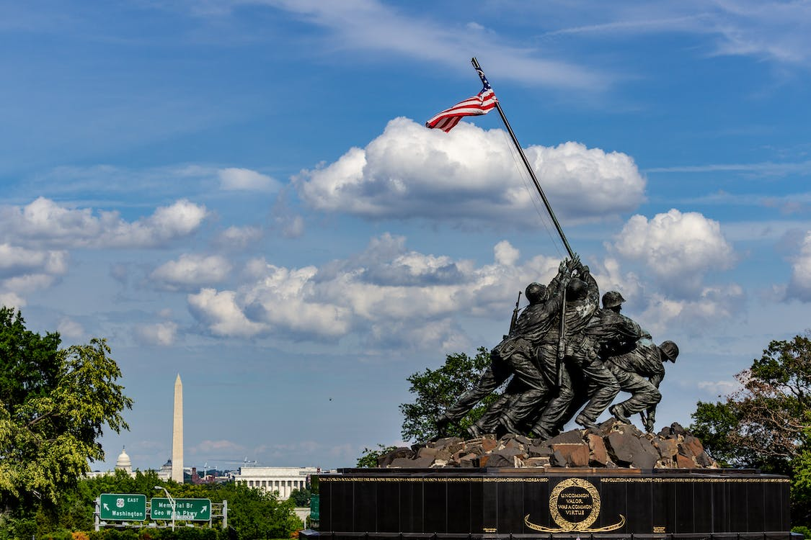

Similar to other Wake Tech students, I did not follow the traditional high school then four year university track. Instead I went to the military first and now I'm back in school to further my education.
This image is the statue of the iconic photo at Iwo Jima. I joined the USMC after high school.
